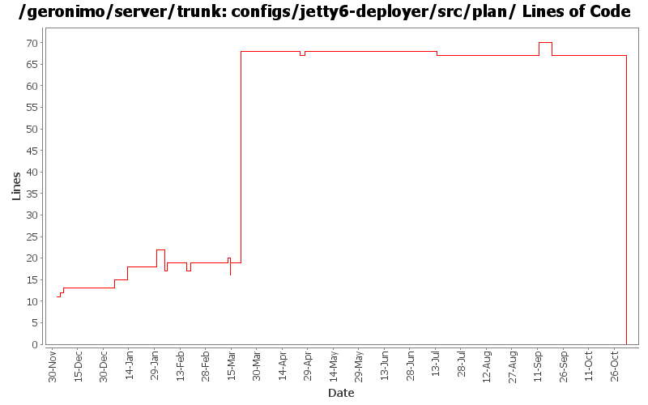

[root]/configs/jetty6-deployer/src/plan

| Author | Changes | Lines of Code | Lines per Change |
|---|---|---|---|
| Totals | 25 (100.0%) | 108 (100.0%) | 4.3 |
| djencks | 8 (32.0%) | 70 (64.8%) | 8.7 |
| kevan | 1 (4.0%) | 12 (11.1%) | 12.0 |
| dims | 3 (12.0%) | 10 (9.3%) | 3.3 |
| jbohn | 4 (16.0%) | 5 (4.6%) | 1.2 |
| gawor | 2 (8.0%) | 5 (4.6%) | 2.5 |
| pmcmahan | 2 (8.0%) | 3 (2.8%) | 1.5 |
| gdamour | 4 (16.0%) | 3 (2.8%) | 0.7 |
| prasad | 1 (4.0%) | 0 (0.0%) | 0.0 |
GERONIMO-3565. Configs distributed amongst framework/configs and plugins
0 lines of code changed in 1 file:
remove filtering of Spring classes and resources as it creates problems with the new admin console
1 lines of code changed in 1 file:
fix the cxf/spring issues by hiding the spring classes and resources from the application classloader and by making cxf to use cxf/car module classloader to load spring resources instead of the application classloader
4 lines of code changed in 1 file:
GERONIMO-3321. Pay attention to the weirdo jsp-property-group/url-pattern in the jetty deployer
4 lines of code changed in 1 file:
GERONIMO-3131 GERONIMO-3132 GERONIMO-3133 GERONIMO-3134 Defaults for persistence units. Supply locations of jars with persistent classes to the PersistenceUnitInfo. Match a ref with not persistence unit specified to a unique match. Allow wars to have jndi references pointing to the war module, not just the ear
3 lines of code changed in 1 file:
GERONIMO-3051 - revert 532106 changes now that 533154 is integrated
1 lines of code changed in 1 file:
GERONIMO-3051 Fix DB Viewer portlet error - patch from Frank G with a tweak to the jasper builder so things will build
0 lines of code changed in 1 file:
Uniformize jetty/tomcat plans, assemblies
57 lines of code changed in 1 file:
GERONIMO-2958 MyFaces annotation support. Also clean up Module construction and remove unused method from ModuleBuilderExtension
3 lines of code changed in 1 file:
clean up jstl references now that tld processing is improved with rev. 517712
0 lines of code changed in 1 file:
GERONIMO-2955 enable the Jasper servlet to find TLDs in Geronimo's MultiParentClassLoader
When a JSP contains a URI reference to a tag library Jasper scans the jar files
in the classloader hierarchy looking for a TLD file that defines the tags for that
URI. The method it uses to navigate the classloader hierarchy is not compatible
with Geronimo's MultiParentClassLoader.
Jasper allows you to override its default JSP options although it's not very
straightforward to do so. I could not directly extend the default impl
of the Options interface because it is declared final. Also, most of the
important bits of TldLocationsCache are private so I made a copy of it and
adjusted the appropriate methods.
1 lines of code changed in 1 file:
GERONIMO-2804 implement JSF support
- update the myfaces snapshot jars to avoid ELContext problem in its resolvers
- remove references to commons-taglibs where not needed or replace with references to jstl/jstl
- enable myfaces context listener in tomcat by providing new gbean property. tomcat's
default method for finding listeners in TLDs doesn't work with Geronimo's multiparent classloader.
- add org.apache.myfaces and org.apache.taglib to non-overrideable classes for webapps
- enable TLD processing in jetty context so that it can find the myfaces listener
- squelch spurious WARN messages from myfaces configuration startup
2 lines of code changed in 1 file:
Second attempt to change the way the online/offline deployers and the JSR88
deployment driver work. The first attempt was breaking the TCK amd the
eclipse plugin.
Online deployer, i.e. deployer.jar, boots a Kernel to load its dependencies,
e.g. geronimo-deploy-tool, and registers the available ModuleConfigurers with
the DeploymentManager.
ModuleConfigurers to be registered are loaded by the persistent configuration
list jsr88-configurer-config.xml.
In the case of an offline deployment, the online deployer starts the
offline-deployer configuration within the same Kernel. In turn, the
offline-deployer configuration starts a list of configurations to register
the available module builders.
Add a log4j configuration for the online deployer.
DeploymentFactoryBootstrapper is the new JSR88 deployment driver. It boots a
kernel; starts the configuration list jsr88-configurer-config.xml; retrieves
the "actual" DeploymentFactory implementation from the kernel; and delegates
to this retrieved imoplementation.
The JSR88 JAR driver is now named jsr88-deploymentfactory.jar.
This fixes:
* GERONIMO-2794 - Improve online deployer to register ModuleConfigurers from the repository; and
* GERONIMO-2767 - Minimize side effects of the offline deployer
0 lines of code changed in 1 file:
switch order as per jarek's request
3 lines of code changed in 1 file:
Make the test case reflect the wsdl being used by adding other methods mentioned in the wsdl. added a xjc task in the pom.xml to generate the types needed for the fault. Ran the existing tests with both axis2 and cxf. Need to add more tests for the newly added methods.
4 lines of code changed in 1 file:
Revert deployer changes as they do break the Eclipse plugin and TCK.
I will investigate offline.
svn merge -r503370:503369 .
2 lines of code changed in 1 file:
Remove unnecessary hidden-classes.
1 lines of code changed in 1 file:
Online deployer, i.e. deployer.jar, boots a Kernel to load its dependencies,
e.g. geronimo-deploy-tool, and registers the available ModuleConfigurers with
the DeploymentManager.
ModuleConfigurers to be registered are loaded by the persistent configuration
list jsr88-configurer-config.xml.
In the case of an offline deployment, the online deployer starts the
offline-deployer configuration within the same Kernel. In turn, the
offline-deployer configuration starts a list of configurations to register
the available module builders.
Add a log4j configuration for the online deployer.
This fixes:
* GERONIMO-2794 - Improve online deployer to register ModuleConfigurers from the repository; and
* GERONIMO-2767 - Minimize side effects of the offline deployer
0 lines of code changed in 1 file:
Moved jstl integration from containers to defaultEnvironment on web deployers. Also cleaned up references to jstl and removed references to 1.1.1 version
4 lines of code changed in 1 file:
remove tabs from the poms in assemblies, add a couple of entries in configs
3 lines of code changed in 1 file:
GERONIMO-2686 missed the configs changes in previous commit
2 lines of code changed in 1 file:
GERONIMO-2631 parameterize the jsp servlet class name
1 lines of code changed in 1 file:
GERONIMO-2537 Fix notices and src headers in recent jee5 updates. Update Web Console notice.txt w/ ibm donation information, add copyright to assembly notice files, and remove ASF v 1.1 license from source borrowed from xerces project
12 lines of code changed in 1 file:
GERONIMO-2616 move all tx stuff to the transaction-jta1.1 config.
0 lines of code changed in 2 files: